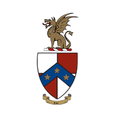

BETA THETA PIGAMMA GAMMA


Starting in 1906, four men founded the local fraternity of Theta Mu Epsilon. Following in the footsteps of two other local fraternities, Theta Mu Epsilon became the Gamma Gamma Chapter of Beta Theta Pi in 1914. Being the 3rd oldest fraternity on campus brought a lot of responsibility and a lot of new members. By 1925, an old professor's home that they used as a chapter house, became too small. The members raised money to build what is now our house. This new house held more than 70 men, and by the early 1940's the house was at full capacity; some even criticized Gamma Gamma for being too large of a chapter. Things changed drastically when World War II broke out. The men left to fight and there was no one to keep the doors of the house open. Instead the house was transformed into a field hospital and a nurse's dormitory called "Mary's House". Over the the last century, the men of Gamma Gamma Chapter have been an integral part of Beta in the Northwest. This chapter helped to recolonize Washington State and Eastern Washington University in the 1990's. While over 2,000 men have passed through our walls, our values have not changed. Stressing academics, responsible social bonds, and true brotherhood has kept our numbers high. We are still the largest fraternity on campus, with members being a very active part of the University community.
Beta Theta Pi was founded on August 8, 1839 at Miami University in Oxford Ohio. At the time of its founding, Beta was the 7th oldest fraternity in the world, and the first fraternity founded west of the Allegheny Mountains. Currently, our national fraternity consists of 122 active chapters and colonies across the United States and in Canada. Over 190,000 members have been initiated worldwide, with approximately 135,000 living initiated members. There are currently more than 8,000 undergraduate members. Beta Theta Pi is one of three fraternities that form the Miami Triad along with Phi Delta Theta and Sigma Chi.
In the early-to-mid-1990s, The General Fraternity of Beta Theta Pi was struggling from all angles in terms of academics, recruitment, risk management, housing infrastructure, alumni involvement, institutional support and public relations. An alumni from St. Lawerence sent a letter challenging Beta’s leadership to be more active in the identification of Beta’s true mission and vision, and work aggressively toward actually implementing policies and programs to achieve both. Since the start of Men of Principle, Beta Theta Pi has seen dramatic improvement in the areas of academics, risk management, chapter size, and volunteerism. Before Men of Principle, the Fraternity’s average chapter GPA was just above a 2.8. Today the Fraternity’s accumulative GPA has risen to a 3.21, the highest out of all fraternities. Currently, the average chapter size is 90 men, a large increase compared to the average of 48 men in 1997. Furthermore, in 1998 there was an average of 2 advisors per chapter, whereas today, an average of 7 advisors work with a single one of the chapters, allowing us to stay on track with our goals and values much more effectively.